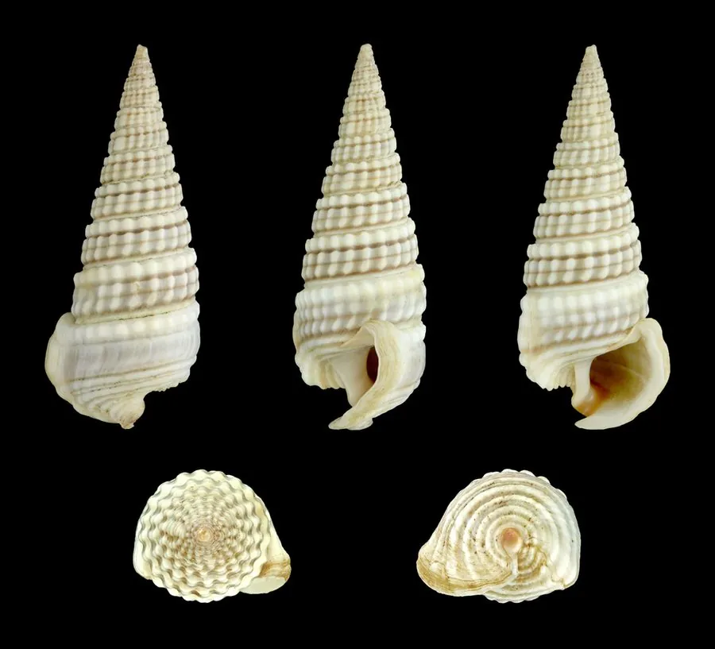

软体动物 · 动物界
珠带拟蟹守螺 Cerithidea cingulata

壳面有颗粒状螺肋和一条珠状色带的小型螺，生活在河口的红树林泥滩，是潮间带常见的植食性螺类。
- 分类
- 门软体动物门纲腹足纲目中腹足目科汇螺科属拟蟹守螺属
- 栖息环境
- 河口、红树林和盐沼的泥滩，喜有淡水输入的软泥环境
- 地理分布
- 印度洋至西太平洋沿岸，包括中国东南沿海、日本、东南亚和澳大利亚北部
- 保护级别
- 尚无保护级别；为红树林潮间带常见螺类
物种志
珠带拟蟹守螺的贝壳呈长锥形，壳高约三至五厘米，壳质坚实，壳面呈灰褐至黑褐色，螺层多而均匀，每一层都有颗粒状的螺肋，体螺层上有一条由白色和褐色颗粒组成的珠状色带，珠带之名由此而来。壳口卵圆形，外唇略厚，前沟短。足部宽大，触角细长，眼睛位于触角基部。它靠足部在泥滩上缓慢爬行，留下浅浅的爬痕。
它分布于印度洋至西太平洋沿岸，包括中国东南沿海、日本、东南亚和澳大利亚北部，栖息在河口、红树林和盐沼的泥滩上，尤其喜欢有淡水输入的软泥环境，常成群密集分布。它以底栖硅藻和有机碎屑为食，用齿舌刮食泥表，涨潮时爬出取食，退潮后藏在泥缝和落叶下。繁殖期在春夏，雌体把卵粒粘在泥面或植物上。它是潮间带常见的植食性螺类，也是红树林生态系统中的组成部分，目前尚无保护级别。
形态与习性
- 食性刮食底栖硅藻和有机碎屑
- 壳高约三至五厘米，壳呈长锥形
- 壳面具颗粒状螺肋和一条珠状色带
- 栖息环境河口、红树林和盐沼泥滩
- 习性涨潮取食，退潮藏于泥缝和落叶下
- 繁殖春夏产卵，卵粒粘于泥面或植物上
趣味知识
- 它体螺层上那条由颗粒组成的色带像一串小珠子，珠带螺的名字由此而来。
- 退潮后的红树林泥滩上，常能看到它密密麻麻地趴在泥面上。
- 它和蟹守螺外形相似，但螺层更多、壳形更细长，喜欢河口低盐环境。